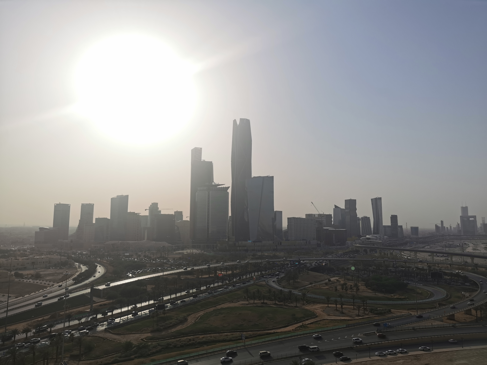

Interceptan ataque hutí en Arabia Saudita; restos de misiles dañan edificio de Aramco en Riad
Las autoridades saudíes informan daños limitados en un edificio del distrito financiero y ninguna víctima; los hutíes reivindican la operación.

Qué pasó
El domingo 8 de noviembre de 2026, las defensas aéreas saudíes interceptaron misiles dirigidos contra Riad y otras zonas del país, según las autoridades. Los restos de los proyectiles alcanzaron la torre Aramco, en el distrito financiero de la capital, rompieron ventanas y dañaron varios pisos. El Ministerio de Energía saudí afirmó que los daños fueron limitados y que no hubo víctimas en el edificio. Los rebeldes hutíes de Yemen reivindicaron el ataque y dijeron que respondía a bombardeos saudíes en Yemen. La coalición encabezada por Arabia Saudita informó de la interceptación de dos misiles balísticos y dos misiles de crucero. Reuters y Associated Press informaron del incidente a partir de declaraciones de las autoridades y las partes implicadas. La afirmación hutí de que el aeropuerto de Riad había sido atacado no fue confirmada por las autoridades saudíes.
Análisis del Cuervo
El episodio eleva el riesgo de una escalada regional y demuestra que los restos de proyectiles interceptados pueden causar daños en edificios civiles e infraestructura económica. Aramco es estratégica para el sector energético saudí, pero las informaciones disponibles no confirman una interrupción de la producción petrolera. El ataque se produce en medio de la intensificación del enfrentamiento entre Arabia Saudita y los hutíes en Yemen y de tensiones en las rutas comerciales de Oriente Medio. Es esencial distinguir los daños confirmados de las reivindicaciones militares.
Contrapunto
Las autoridades saudíes sostienen que sus defensas funcionaron y que no hubo muertos ni heridos en el edificio afectado. Los hutíes afirman que actuaron en represalia por bombardeos en Yemen, donde autoridades bajo su control denuncian decenas de fallecidos; esas cifras y circunstancias requieren verificación independiente. No deben exagerarse las responsabilidades ni el alcance de los daños.